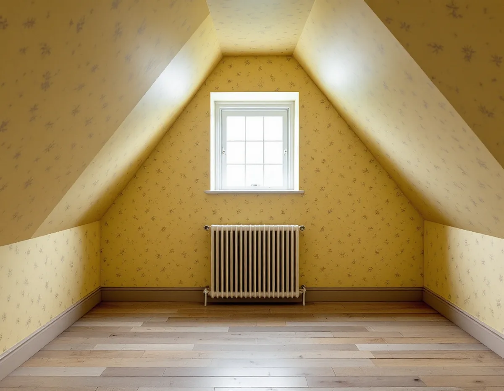
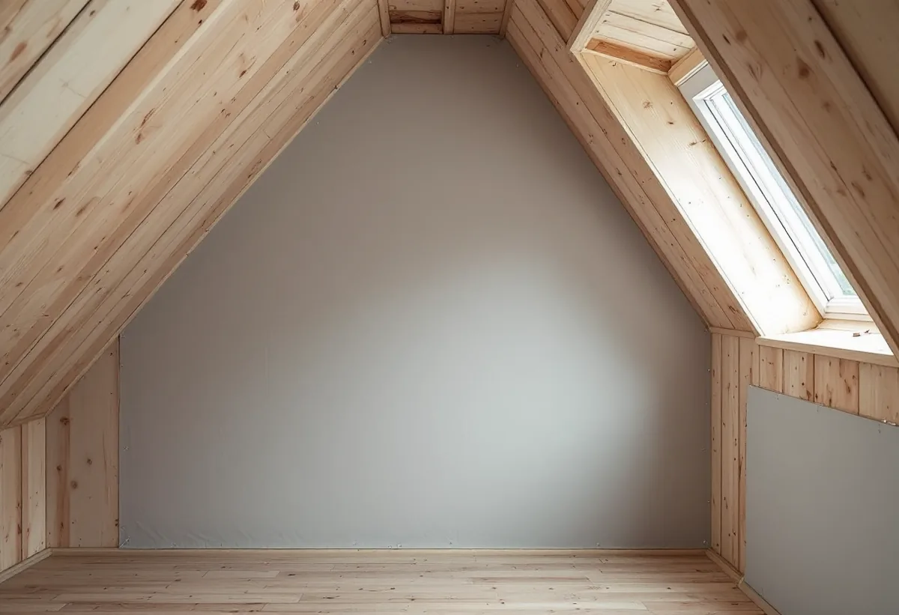

Platsbesök
Vi ser på snedtak, vinklar och knäväggar och frågar vad som finns bakom dem.
Många villor i Gamla Enskede byggdes med delvis inredd vind, och ett vindsrum är ett krävande rum att tapetsera: snedtak, vinklar, kattvindar bakom väggen och papp som rör sig med fukten. Geal Entreprenad AB tapetserar i Enskedes villor, småstugor och radhus, och i vindsrummet planerar vi underlaget innan vi pratar mönster.

Gamla Enskede blev Stockholms första trädgårdsstad och anlades efter en stadsplan från 1908. Stadens vägledning Varsam utveckling av småhus- och villaområden beskriver hur typritningar togs fram, den mest kända är Enskedestugan, och hur huvuddelen av bebyggelsen var friliggande enfamiljshus i ett plan med delvis inredd vind. Husen i Gamla Enskede fick nationalromantikens branta takfall. I Enskededalen blev 1920-talets enkla volymer i ett och ett halvt plan rådande.
Stadsmuseets skrift om Sockenplan beskriver att Gamla Enskedes kärna tillkom 1908–13, men att utbyggnaden fortsatte ända fram till 1945, bland annat med småstugorna nära Sockenplan som byggdes 1931–40. Vägledningens tabell markerar Gamla Enskede som riksintresse och kulturhistoriskt värdefull miljö med äldre miljöprogram, och Enskededalen, Enskede gård och småstugeområdet Enskedefältet som kulturhistoriskt värdefulla.

Är vindsrummets väggar och snedtak klädda med spännpapp avgör vinklarna resultatet. Svenska Byggnadsvårdsföreningen förklarar att en torr remsa läggs över spikraden för att klistret inte ska smita runt spikskallarna så att de syns. I en vinkel kan spikraden inte sättas ända in mot hörnet, eftersom torremsan då hamnar i vinkeln och spänner ut. Spikraden sätts i stället en bit in på båda sidor, så att det finns plats för torremsa och klisterremsa, och sist klistras en remsa i själva vinkeln.
Har en äldre pappspänd vägg blivit slak rekommenderar föreningen att den förlimmas med utspätt tapetklister och får torka, så bör pappen sträcka sig igen. Föreningen påminner också om att pappen sväller och blir lite bredare av fukten.
Bakom ett vindsrums knäväggar kan det ligga en kattvind. Byggnadsvårdsföreningen har fått frågan från ägaren till ett putsat 1920-talshus vars kattvindar var pappspända direkt mot brädstommen, och som ville sätta gipsskivor mot den befintliga pappen inför tapetsering. Svaret var att det bör gå bra om det inte är oisolerat bakom, men att gipsskivor kan få mögelpåväxt på pappret i fuktig miljö, något som kan förekomma i källare och på vindar. Ett alternativ är träpanel.
Därför frågar vi vid platsbesöket vad som finns bakom knäväggen, om det är isolerat och om det har förekommit fukt. Svaret avgör om vi spänner ny papp, sätter skivor eller lagar den papp som redan sitter. Finns det en lucka in till kattvinden tittar vi in med en lampa, och vi känner efter om knäväggen är kall eller fuktig innan något bestäms.
Vägledningen konstaterar att många hus i trädgårdsstäderna har förändrats interiört och byggts till genom åren. Det som finns kvar kan ändå vara värdefullt. Boverket skriver att förvanskningsförbudet gäller vid alla ändringar, såväl exteriört som interiört, och oberoende av om åtgärden kräver lov. Förbudet är inget förändringsförbud, men de egenskaper som gör byggnaden särskilt värdefull är skyddade.
Är du osäker kan Stadsmuseet hjälpa till. Museet ger rådgivning och brukar svara inom tre veckor när det har fått de uppgifter som efterfrågas. Gäller frågan fasadens panel, spån eller puts finns det mer under målare i Enskede.
Vi ser på snedtak, vinklar och knäväggar och frågar vad som finns bakom dem.
Ny spännpapp, förlimning av befintlig papp eller skivor väljs efter rummet.
Underlag, vinklar och uppsättning redovisas var för sig.
Spikrader sätts en bit från vinklarna, och torra remsor och klisterremsor läggs på.
Pappen får torka och sträcka sig innan tapeten kommer upp.
Tapeten sätts upp med passning av mönstret även i snedtaket.
Skatteverket räknar tapetsering som rotarbete i småhus, bostadsrätt och ägarlägenhet. I en bostadsrätt ska arbetet göras innanför bostadens tak, väggar och golv.
Avdraget är 30 procent av arbetskostnaden, högst 50 000 kr per person och år och högst 75 000 kr tillsammans med rutavdrag. Material som tapet, papp och klister ger inget avdrag, och inte heller resor. Avdraget dras direkt på Geals faktura.
Antalet vinklar och snedtak, om pappen ska spännas om och hur mönstret ska passas mot lutande ytor påverkar mest. Efter ett gratis platsbesök får du ett skriftligt kostnadsförslag.
Fasad, fönster och invändig målning.
Målare i Stockholm →Takbyte, takbesiktning och plåtarbeten.
Takläggare i Enskede →Trädgårdsstad med lertegel.
Takrenovering i Enskede →Trädgårdsstaden, kartan och lovet.
Attefallshus i Enskede →Typhus i trä, träbjälklag och bostadsrätt.
Badrumsrenovering i Enskede →Byggplatsen, gatan och träden.
Byggföretag i Enskede →Trädgårdsstadens kulörer.
Fasadmålning i Enskede →Trähus, putsade typhus och småstugor i Enskede.
Fasadrenovering i Enskede →Fönster i riksintresset.
Fönsterbyte i Enskede →Trädgårdsstadens fönster.
Fönsterrenovering i Enskede →Lut, såpa och olja på fur och gran.
Golvläggare i Enskede →Slipa fram gamla brädgolv i villan.
Golvslipning i Enskede →Typhus, dubbelhus och småstugor.
Köksrenovering i Enskede →Trädgårdsstad, egnahem och småstugor i Enskede.
Målare i Enskede →Snörasskydd, rännor och verandaplåt i Enskede.
Plåtslagare i Enskede →Verandor, entréer och bodar i trädgårdsstaden.
Snickare i Enskede →Takfallet, höjden och riksintresset.
Takbyte i Enskede →Små tomter och riksintresse.
Tillbyggnad i Enskede →Renovera innan ni flyttar in.
Totalrenovering i Enskede →